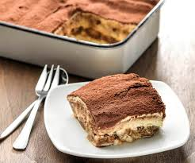

Tiramisu

- 2 med eggs
- 1 egg yoke
- 130g caster sugar
- 500g mascarpone
- 300g sponge finger biscuits
- 300-400g strong brewed coffee, chilled
- 20g cocoa powder, unsweetened
Cooking Directions
-
Combine cofee with caster sugar in a bowl and set to
the side
-
Add mascarpone cheese to the coffee and caster sugar mix
til incorporated
-
Dip sponge fingers into the coffee lightly and place in a
9x9 baking pan, the bottom should be lined with the sponge
fingers.
-
Scoop half of your mascarpone onto the top of the lady fingers,
repeat this process for a second layer
-
Sift cocoa powder on top of the second layer of mascarpone cream
-
Cover and place in the fridge fo at least 6 hours before serving